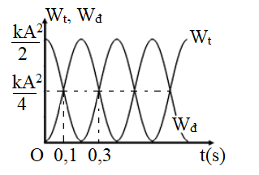
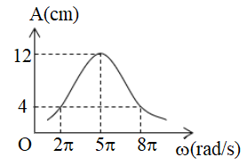
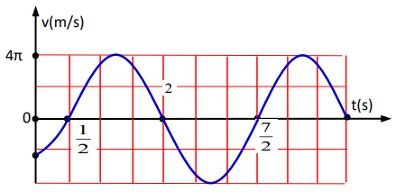
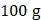
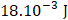

📋 Quy định làm bài
- Thời gian: 45 phút. Còn 10 phút hệ thống nhắc; hết giờ có thêm 5 phút gia hạn rồi tự động nộp.
- Bài làm ở chế độ toàn màn hình. Chuyển tab, mất focus, thoát toàn màn hình đều bị ghi nhận và báo cho giáo viên.
- Không dùng chuột phải, sao chép/dán, phím tắt. Trợ lý AI chỉ mở sau khi nộp bài. Phần tự luận: AI gợi ý điểm, giáo viên duyệt điểm chính thức.
PHẦN I. Câu trắc nghiệm nhiều phương án lựa chọn
Mỗi câu có 4 phương án, chỉ chọn một đáp án đúng (0,25 điểm).
1
Dao động tự do là dao động có chu kì
2
Một chất điểm dao động điều hòa với biên độ A và tần số góc $\omega$ thì giá trị cực đại của vận tốc là
3
Con lắc lò xo gồm lò xo có độ cứng k, vật nhỏ có khối lượng m. Con lắc được kích thích cho dao động điều hòa. Biết biên độ dao động là A. Cơ năng của con lắc được xác định bằng
4
Một vật dao động điều hòa với phương trình $x=A\cos\left(\omega t+\varphi\right)$ (trong đó A, $\omega$, $\varphi$ là các hằng số và $A>0$, $\omega>0$). Đại lượng có đơn vị $\left(\frac{rad}{s}\right)$ là
5

Con lắc lò xo dao động điều hoà với chu kì T. Đồ thị biểu diễn sự biến đổi động năng và thế năng theo thời gian cho ở hình vẽ. Giá trị của T là6
Đồ thị vận tốc - thời gian của vật dao động điều hòa là
7
Dao động cưỡng bức trong giai đoạn ổn định có
8
Một vật dao động điều hoà theo phương trình $x=2\cos(4\pi t+\pi/6)$ (cm). Chu kì và tần số dao động của vật là
9
Nguyên nhân gây ra dao động tắt dần của con lắc đơn trong không khí là
10
Một vật dao động điều hòa theo phương trình $x=6\cos(2\pi t)$ (cm). Biên độ dao động của vật là
11
Trong dao động tắt dần, đại lượng nào sau đây luôn giảm dần theo thời gian?
12

Một con lắc lò xo có khối lượng 100 g dao động cưỡng bức ổn định dưới tác dụng của ngoại lực biến thiên tuần hoàn. Đồ thị biểu diễn sự phụ thuộc của biên độ vào tần số góc của ngoại lực tác dụng lên hệ có dạng như hình vẽ. Độ cứng của lò xo là13
Một vật dao động điều hòa có phương trình $x=5\cos\left(10\pi t+\frac{\pi}{3}\right)$ (cm). Pha dao động của vật ở thời điểm t = 0,2 giây là
14
Cơ năng của một chất điểm dao động điều hoà tỉ lệ thuận với
15

Hình bên là đồ thị biểu diễn sự phụ thuộc của vận tốc v theo thời gian t của một vật dao động điều hòa. Vận tốc cực đại của vật là16
Một vật dao động cưỡng bức dưới tác dụng của ngoại lực $F=F_{0}\cos\left(8\pi t-\frac{\pi}{6}\right)$ (với $F_0$ không đổi, t tính bằng s). Tần số dao động cưỡng bức của vật là
17
Một con lắc lò xo gồm một vật nhỏ khối lượng m và lò xo có độ cứng k. Con lắc dao động điều hòa với tần số góc là
18
Bộ phận giảm xóc của xe máy, ô tô hoạt động dựa trên ứng dụng của
PHẦN II. Câu trắc nghiệm đúng sai
Trong mỗi ý a), b), c), d) chọn Đúng hoặc Sai. Đúng 1 ý: 0,1 · 2 ý: 0,25 · 3 ý: 0,5 · 4 ý: 1,0 điểm.
1
Một vật dao động điều hòa theo một trục cố định (mốc thế năng ở vị trí cân bằng) thì
a) li độ của vật biến thiên theo hàm cos (hoặc sin) theo thời gian.
b) cơ năng của vật biến thiên điều hòa theo thời gian.
c) thế năng của vật cực đại khi vật ở vị trí biên.
d) khi ở vị trí cân bằng, gia tốc của vật có độ lớn cực đại.
2
Một vật dao động điều hòa với phương trình $x=6\cos\left(4\pi t-\frac{\pi}{3}\right)$ (x tính bằng cm, t tính bằng giây). Lấy $\pi^{2}=10$.
a) Biên độ dao động của vật là A = 6 cm.
b) Chu kì dao động của vật là T = 2 s.
c) Pha ban đầu của vật là $\varphi=\frac{\pi}{3}$.
d) Tại thời điểm vật cách vị trí cân bằng 4 cm, gia tốc của vật có độ lớn là 6,4 m/s².
3
Một vật có khối lượng m = 0,1 kg dao động điều hòa theo phương trình $x=A\cos\left(\omega t+\varphi\right)$. Hình bên là đồ thị biểu diễn sự phụ thuộc của vận tốc v của vật theo thời gian t.

a) Tại thời điểm ban đầu (t = 0) vật đi qua vị trí cân bằng.
b) Ở thời điểm t = 0,1 s, vật có vận tốc bằng không.
c) Chu kì dao động của vật là T = 0,6 s.
d) Cơ năng của vật là $2.10^{-3}$ J.
4
Một con lắc lò xo dao động tắt dần chậm trên mặt phẳng nằm ngang có ma sát với biên độ và tần số ban đầu lần lượt là A = 5 cm và f = 2 Hz.
a) Sau một chu kì, biên độ dao động của con lắc nhỏ hơn 5 cm.
b) Nguyên nhân làm cho con lắc lò xo dao động tắt dần là do có lực ma sát tác dụng lên con lắc.
c) Trong quá trình dao động, vận tốc của vật luôn giảm dần theo thời gian.
d) Sau một khoảng thời gian, tần số dao động của nó vẫn giữ nguyên f = 2 Hz.
PHẦN III. Câu trắc nghiệm trả lời ngắn
Điền đáp số (có thể dùng dấu phẩy hoặc dấu chấm thập phân). Mỗi câu 0,25 điểm.
1
Một con lắc lò xo gồm lò xo có độ cứng k = 100 N/m, vật nhỏ có khối lượng m dao động tắt dần. Ban đầu biên độ dao động của con lắc là 4 cm. Sau 10 chu kỳ, biên độ dao động của con lắc giảm xuống còn 2 cm. Phần năng lượng con lắc giảm đi sau 10 chu kỳ là bao nhiêu Jun?
J
2
Một vật dao động điều hòa với phương trình $x=8\cos(\pi t)$ (x tính bằng cm, t tính bằng giây). Tại thời điểm t = 0,5 giây thì vận tốc của vật là bao nhiêu centimét/giây? (Kết quả làm tròn đến chữ số hàng đơn vị).
cm/s
3
Một chất điểm có khối lượng

100 g dao động điều hoà trên quỹ đạo là đoạn thẳng MN. Tại điểm P cách M một khoảng 4 cm và tại điểm Q cách N một khoảng 2 cm, chất điểm có động năng tương ứng là $27.10^{-3}$ J và $18.10^{-3}$ J
. Biết MN > 8 cm. Biên độ dao động của chất điểm là bao nhiêu centimét? (Kết quả làm tròn đến chữ số hàng đơn vị). cm